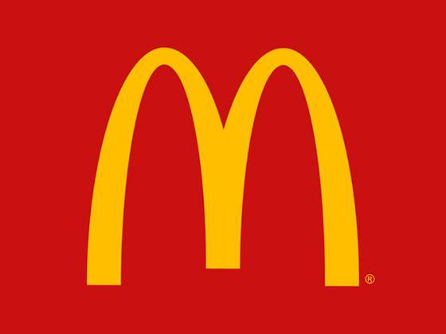

Professional Experience and Skills Developed
Professional Liaison Unit
- Designed and implemented a CMS known as 'Sandview', which aided the PLU in collating company application advice from multiple sources.
- Managed and maintained the recruitment database, 'InPlace', as well as testing new features on the platform and training team members.
- Organised networking and recruitment events throughout the academic year, and organised a brand new event, known as Tech@City, which attracted over 150 attendants.

Morleys' Department Stores
- Processing stock orders throughout the business day and faxing stock information to the head office at the end of the business day.
- Resolving queries through telephone and face-to-face contact during the business day.
- Developed strong customer service skills and the ability to work without supervision.
Financial Conduct Authority
- Shadowing a team of change and environment analysts during a brief period of work experience for two weeks.
- Assisted the team of analysts in reviewing change requests for a number of systems, while also developing knowledge in business operations through one-to-one meetings with members of the organisation.
McDonald's
- Working under high pressure environments to maintain cleanliness of the upper and lower dining areas.
- Resolving queries and customer disputes throughout the business day.
